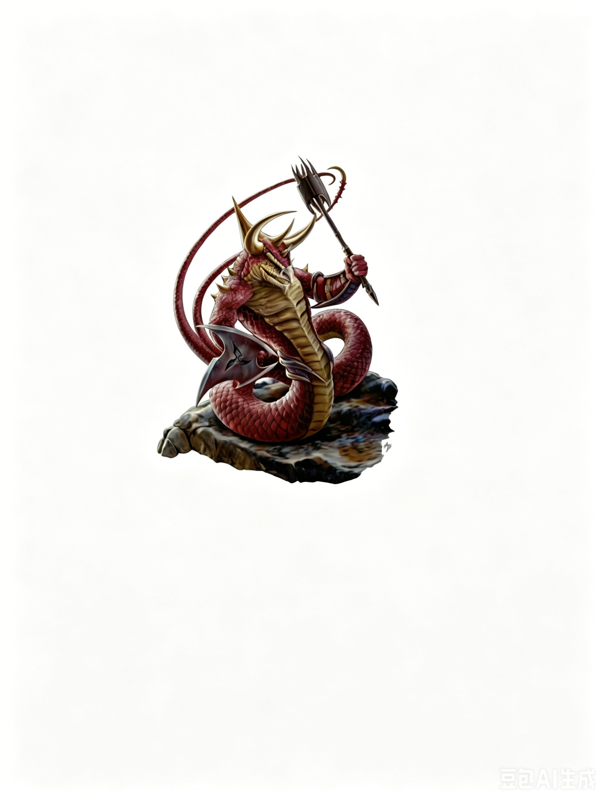

大型人形怪物（火） | 挑战级数 7出现在你面前的生物看起来像一条巨大的蛇，但拥有类人生物的上半身。其头部顶着长而锋利的角，尾巴在三分之二处分叉，末端呈尖钩状。它一手持沉重的硬头锤，另一手拿着小型盾牌。它的鳞片颜色在暗棕色和深红色之间变换，并且周围隐约有热浪升腾的现象。
火鳞蛇人 ―― 始终为混乱邪恶。
| 生命骰 | 11d8+44（93HP）；DR 10/魔法 |
| 先攻 | +1 |
| 速度 | 30 英尺 (6格) |
| 防御等级 | 19，接触 10，措手不及 18（-1体型，+1敏捷，+1盾牌，+8天生） |
| 基本攻击/擒抱 | +11 / +20 |
| 近战攻击 | 重型硬头锤 +16/+11/+6 (2d6+5 外加 1d6 火焰伤害) 和 抵撞 +13 (1d8+2 外加 1d6 火焰伤害) 和 尾击 +13 (1d8+2 外加 1d6 火焰伤害) |
| 占据/触及 | 10 英尺 / 10 英尺 |
| 特殊攻击 | 猛力攻击、紧勒、精通攫抓、魔法打击、尾部擒抱 |
| 特殊能力 | 黑暗视觉 60 英尺；免疫：火焰；SR 15 |
| 豁免 | 强韧 +7，反射 +8，意志 +9 |
| 弱点 | 寒冷易伤 |
| 属性 | 力量 21，敏捷 13，体质 18，智力 6，感知 14，魅力 11 |
| 技能 | 聆听 +8，潜行 +4，侦查 +8，生存 +5 |
| 专长 | 警觉、多重攻击、猛力攻击、武器专攻（重型硬头锤） |
| 语言 | 通用语、火族语、蛇人语 |
| 装备 | 轻型钢盾、重型硬头锤 |
| 进化 | 通过角色等级提升 |
| 偏好职业 | 野蛮人；详见后文 |
紧勒 (Ex)：火鳞蛇人通过成功的擒抱检定，可自动对目标造成尾击伤害（包括火焰伤害）。若使用尾击攻击成功触发精通攫抓，则同样造成此伤害。
精通攫抓 (Ex)：为了使用此能力，火鳞蛇人必须用尾击攻击命中不超过大型的目标。命中后，它可以作为一个自由动作尝试发起擒抱，而不会引发借机攻击。如果它赢得擒抱检定，则可建立擒抱并触发紧勒效果。
尾部擒抱 (Ex)：火鳞蛇人强壮的尾巴可以在不影响其防御或使用武器的情况下缠住敌人。如果火鳞通过精通攫抓能力抓住敌人，它在此状态下不会失去敏捷加值。
每轮它可以作为迅捷动作对被缠住的敌人进行一次擒抱检定。
火鳞在此状态下仍能正常进行大多数其他行动；若需移动，则需遵循擒抱时的标准规则。
如果火鳞使用标准或整轮动作与目标进行擒抱，则无法再以迅捷动作进行额外擒抱。同样，若火鳞使用迅捷动作进行擒抱，则无法再用标准或整轮动作继续擒抱。
火鳞蛇人可对被其尾巴缠住的敌人使用武器攻击或天生攻击。
火鳞是蛇人通过实验创造的生物，旨在制造一种拥有元素特质（在此为火焰）的类异怪物种。火鳞的血统中带有部分火蜥蜴 (Salamander) 的基因，但它仍主要表现为蛇类特征。
火鳞蛇人是极为好斗的生物，比起布置陷阱或伏击，它们更倾向于直接冲入近战。这些生物简单粗暴，充满野性。当蛇人需要击退入侵者，或者希望以强大的力量震慑敌人时，它们会部署火鳞上场。
当单独行动时，火鳞蛇人通常会用尾巴擒抱敌方的施法者，将其限制住，然后用重型硬头锤与其他敌人交战。然而，由于它们极其残忍，常常在一轮攻击中留出最后一击，用硬头锤对被擒抱的目标造成快速而致命的打击。
在团队作战中（通常由两到四只组成），火鳞蛇人的效率实际上会下降。它们的嗜血本性压倒了本就稀薄的常识。当一只火鳞成功擒抱一个敌人时，其他的火鳞往往无视剩下的敌人，试图争夺对被擒抱生物的控制权，形成一种残忍的"拔河"局面。（最高的擒抱检定胜出；若被擒抱的敌人检定最高，它会利用混乱摆脱控制。）一旦被擒抱的生物死亡或脱离它们的控制，其他火鳞才会将注意力转回剩余的敌人。没有更聪明的蛇人指挥时，火鳞几乎不会采用任何战术。
火鳞蛇人通常为更聪明的蛇人主人战斗。那些单独出现的个体通常是其据点被摧毁后幸存下来的战士。凭借强大的力量和身体的韧性，火鳞在混乱的战斗或突袭中比它们的上级更容易存活。
个体 (EL 7)：一只独行的火鳞蛇人会尽可能靠近敌人发起战斗。这种孤独的野蛮生物通常在蛇人据点周围的丛林中巡逻。它会从一片树林潜入另一片树林，而不是以固定路线巡逻，而是会在一个哨岗停留一段时间后才移动到下一个地点。
护卫 (EL 9)：一只妖蛇人将一只火鳞作为其私人护卫。在战斗中，妖蛇人会等它的火鳞仆从擒抱住敌人后，利用自己的嫌恶术能力迫使被擒抱生物的同伴远离，增加其同伴协助的难度。
生态：与其他蛇人类似，火鳞会选择任何可以建立神庙的地方定居――从偏远的废墟到人类聚居地地下被遗忘的通道，皆有可能。尽管火鳞具备强大的战斗能力，但大多数蛇人对它们并不信任，认为它们是高度消耗品。它们难以预测的残忍天性对部落构成威胁，而在无事可做时，它们常因无聊而进行肆意破坏。甚至有传闻称，一些蛇人堡垒已被叛变的火鳞占领并控制。因此，蛇人通常会准备大量野兽和奴隶，以便在繁育足够的火鳞作为战斗力时，为它们提供娱乐和发泄的目标。
由于存在叛乱风险，蛇人首领经常制造借口，将火鳞成群派往族地外执行长时间的任务。明智的蛇人通常会在战斗的前夕才召集火鳞，而不会过早动员。偶尔，有脱离主人的火鳞蛇人会组建自己的部落。这些生物有时会发现迫使他人服从自己意志的价值，尤其是这种行为能为它们带来更多俘虏。弱小的类人生物，特别是地精和狗头人，通常是它们的首选奴隶候选。
环境：如同所有蛇人一样，火鳞通常生活在温暖的森林中。它们所在的区域很容易通过周围被烧焦的痕迹辨认出来。当部落的其他成员居住在地下（例如古老神庙的遗址）时，火鳞通常占据部落中最深的区域，它们强烈的体温还能帮助部落保持隧道的温暖。
典型的身体特征：火鳞蛇人通常长 10 至 14 英尺，体重在 250 至 400 磅之间。雌性通常比雄性颜色更深，多偏向灰色和棕色，而非红色。
典型宝物：火鳞蛇人拥有与其挑战等级相符的标准宝物，价值约为 3600 金币，但它们从不携带易燃物品。这些生物过于喜爱焚烧和破坏物品，不会保留脆弱的物品。它们更偏好宝石，因为宝石难以被火焰损坏。拥有职业等级的火鳞，其宝物与相应挑战等级的 NPC 一致。
拥有职业等级的火鳞蛇人：蛇人崇拜 Merrshaulk，这位神�o指引并促成了蛇人血统的形成。火鳞极少成为牧师，因为它们将施法任务留给纯血蛇人。
等级调整：+8
在艾伯伦：火鳞蛇人曾出现在希恩德瑞克 (Xen'drik) 的丛林中。关于一座被这些生物占领的大型石质堡垒的传言不断流传。它们从那里出发，袭击周边区域。任何在丛林中探险的队伍若被它们捕获，将会遭遇不幸，因为火鳞总是在寻找目标，以满足它们无尽的暴力欲望。
在费伦：位于蛇丘 (Serpent Hills) 的蛇人为了讨好在那里筑巢的红龙而创造了火鳞，作为交换，它们得到了红龙提供的某些魔法宝物。红龙会使用火鳞作为巢穴守卫或战斗中的突击部队，以对抗该地区的赤铜龙。
拥有 自然知识 (Knowledge: Nature) 技能点的角色可以通过检定了解更多关于火鳞蛇人的信息。成功的技能检定可以揭示以下内容，包括所有较低难度的知识：
DC 17：这种生物是火鳞蛇人，是蛇人通过与元素生物进行古怪繁殖实验的结果。这一信息揭示了所有人形怪物特性及火焰亚种特性。
DC 22：火鳞蛇人是好斗的战士，其嗜血本性与其火焰特性相辅相成。它们的皮肤炽热至极，对触碰者造成灼伤，并且对火焰攻击免疫。
DC 27：火鳞蛇人的分叉、倒钩状尾巴可以通过一次攻击抓住并碾压敌人。
DC 32：火鳞蛇人通过将敌人困在尾巴的纠缠中发动攻击。即使擒抱住敌人，它仍能毫无阻碍地战斗和闪避其他敌人。